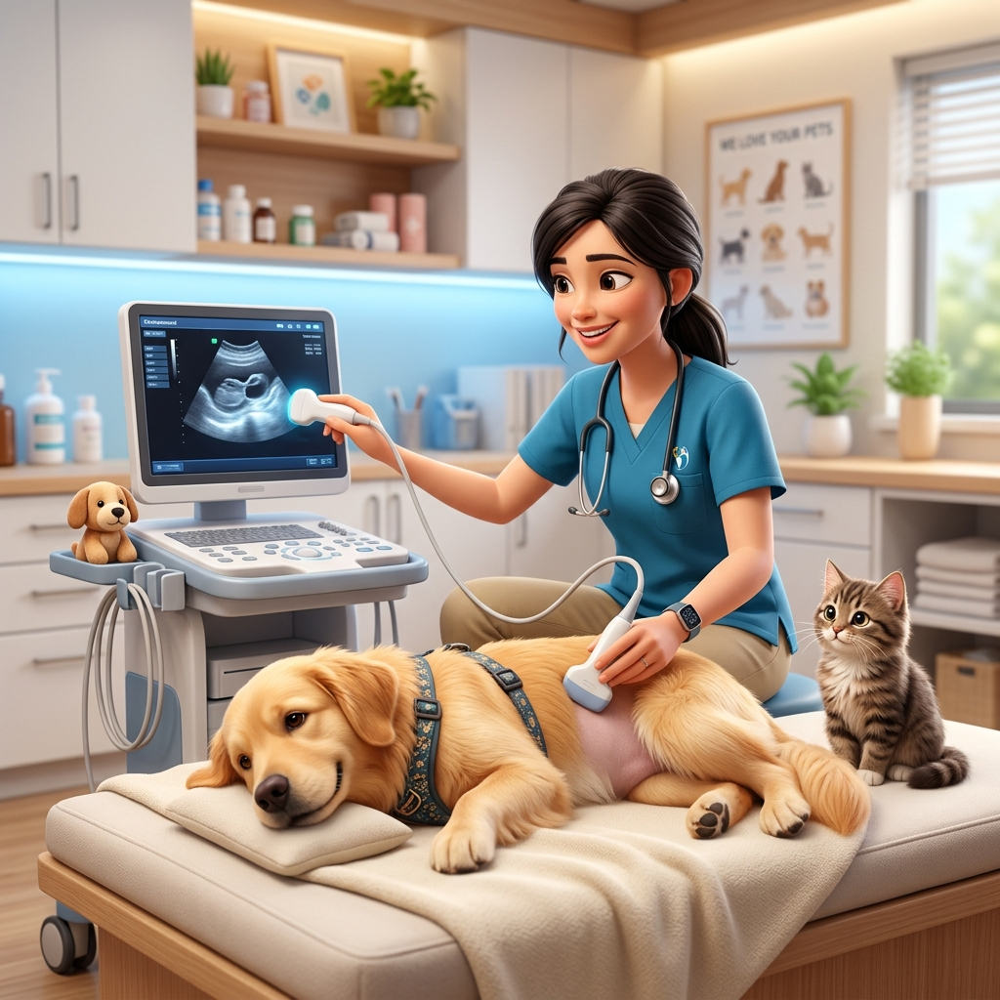

Diagnóstico de Precisión con Máxima Paciencia y Cuidado
Especialistas en ecografías veterinarias y estudios complementarios. Brindamos contención y un entorno tranquilo para mascotas inquietas o nerviosas.

Estudios Cómodos y Sin Estrés 🐾
"Llevé a mi perra que es un poco inquieta para una eco y le tuvieron toda la paciencia. Nos sentimos muy cómodos."
Nuestros Servicios de Diagnóstico
Atención profesional enfocado en el bienestar y precisión diagnóstica
Ecografías Abdominales
Exploración detallada de órganos internos para la detección temprana de patologías y seguimiento médico.
Ecografías de Control y Gestación
Seguimiento del estado de gestación y controles de rutina evaluando salud cardiaca y abdominal.
Estudios para Mascotas Inquietas
Metodología suave y amigable diseñada para perros y gatos nerviosos durante la toma de muestras o ecografías.
Informes para Derivaciones
Estudios acompañados de imágenes y reportes claros para ser presentados ante tu veterinario clínico.
Experiencias de Nuestros Pacientes
Puntuación perfecta 5.0 ★ basada en la calidez de nuestra atención
"Excelente atención. Llevé a mi perra que es un poco inquieta para una eco y le tuvieron toda la paciencia."
"Muy linda atención fuimos a hacer una eco, nos sentimos muy cómodos."
"Paciencia absoluta y profesionalismo en cada ecografía. Muy recomendados en Lomas."
Solicitá Tu Turno
Estamos convenientemente ubicados en la esquina de Tucumán y Portela, Lomas de Zamora.
Tucumán 298, B1832CAF Lomas de Zamora, Provincia de Buenos Aires
Plus Code: 6HVP+VG Lomas de ZamoraAbierto · Cierra a las 16:00 hs